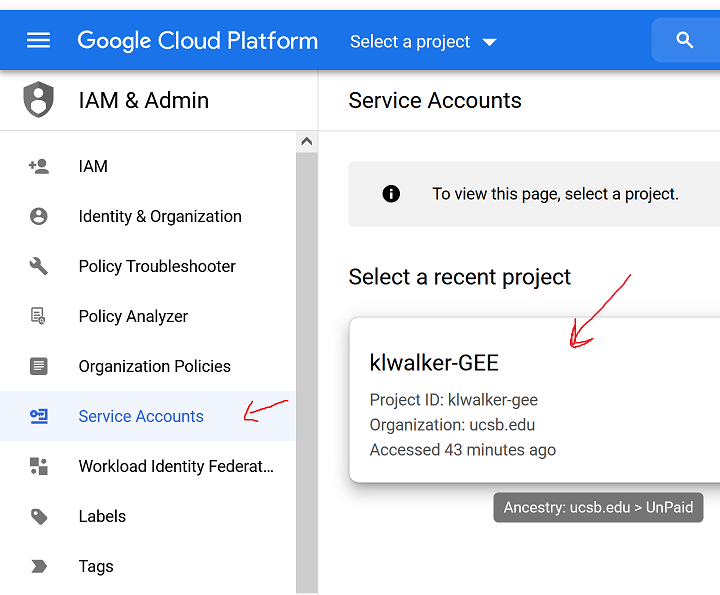
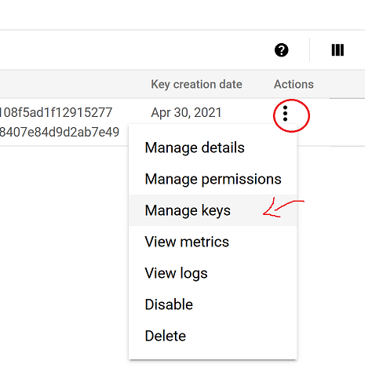
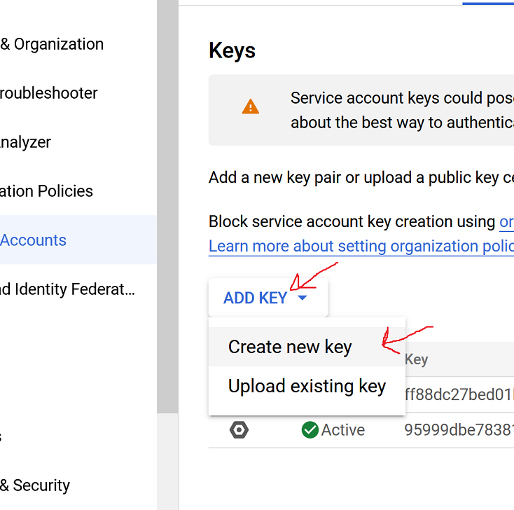

Configuring eosvault¶
===============================================================================================================================
eosvault is used to download Earth observation satellite imagery from Google Earth Engine and and post-process this imagery externally. You can learn more about eosvault here
1. configure your Google SDK¶
To be able to ingest imagery from Google Earth Engine, you first need to set up your Google SDK and Google Earth Engine. Follow the five steps (and links) of this Google Earth Engine Quickstart. Make sure you use your UCSB email for your Google Earth Engine account.
Get a private key file for the service account you created in step 5 of the Google Earth Engine Quickstart.
1. Click new service account in Google Cloud Platform |
2.Click on 3 vertical dots, then “Manage Keys” |
3. Click “Add Key”, then “Create new Key” |
|---|---|---|
 |
 |
 |
Then download the .json key file immeadiately
You will only have the option to download the .json key file at the moment you create the key
You need this file to proceed. (If you miss the opportunity, you can create a new key)
2. upload your Google SDK key file to your cluster space¶
Transfer the .json key file into a chosen directory on your cluster space (i.e. ~/.eosvault), via one of these file transfer options.
3. Create a NASA Earthdata key¶
A NASA Earthdata secret key/code file pair is needed to download data from the Nasa Earthdata repository. These can be generated through Geowombat (which you already installed in your Python environment) through IPython (the Python interpreter that you also already installed in your Python environment):
# From inside the directory where you want your keys (i.e. cd ~/.eosvault)
# Activate your venv
source .nasaenv/bin/activate
# open an IPython session
(.nasaenv) ipython
# the terminal window should then look something like
In [1]:
# run the passkey code example
In [1]: from geowombat.data import PassKey
In [2]: pk = PassKey()
In [3]: pk.create_key('nasaearth.key')
In [4]: pk.create_passcode('nasaearth.key', 'nasaearth.code')
#This will prompt a password entry
In [5] exit
# Deactivate your venv
(.nasaenv) deactivate
4. Copy and edit the config.yaml file¶
Copy the config.yaml template to the project/config directory on your space
#Create project/config directory if it doesn't already exist
mkdir -p ~/project/config
cp /jad-cel/sandbox-cel/paraguay_lc/templates/eosvault_config_eri_pry.yaml ~/project/config/config_eri.yaml
Open the template in the vim editor
vim ~/project/config/config_eri.yaml
To edit a line, type i, edit as desired, then hit Esc key and type :wq. Hit Enter key. For help editing in Vim, see Vim Commands.
Edit the following lines to match your paths:
Google secret key(line 12 below): Edit path to match that of the secret key you uploaded in step #2 aboveangles(lines 16-17 of the template below): Edit path to match your own. First you need to extract the angle files into the corresponding directory:#make the directory if it doesn't alreay exist: mkdir -p ~/code/bin/ #move the ESPA.tar.gz file into the directory prior to extracting: mv ~/tmp/eosvault/files/ESPA.tar.gz ~/code/bin/ESPA.tar.gz #Navigate to the new directory cd ~/code/bin/ extract the angle files: tar -xzvf ESPA.tar.gz
Nasa Earth data: In line 66, modify your username. In lines 67 and 68, modify the path to where you put your Nasa Earth key and code in step 3.
config_eri.yaml template (with added line #s for reference):
1- # Root directory for the GCP index files
2- index_dir: '/jad-cel/sandbox-cel/paraguay_lc/raster'
3-
4- # Directory to save text files of incomplete batch jobs
5- log_dir: '/home/<username>/code/bash'
6-
7- # Length (in meters) on each side of grid
8- grid_size: 20000
9-
10- google:
11-
12- secret_key: '/home/<username>/.eosvault/<key>.json'
13-
14- angles:
15-
16- l57_angles_path: '/home/<username>/code/bin/ESPA/landsat_angles'
17- l8_angles_path: '/home/<username>/code/bin/ESPA/l8_angles'
18- subsample: 10
19- resampling: 'bilinear'
20-
21- sixs:
22-
23- coarse_res: 100.0
24-
25- io:
26-
27- # netcdf | geotiff
28- file_format: 'netcdf'
29- chunks: 512
30- resampling: 'cubic'
31- num_threads: 2
32- nodataval: 65535
33-
34- to_netcdf_kwargs:
35- zlib: True
36- complevel: 5
37-
38- to_raster_kwargs:
39- overwrite: True
40- compress: 'lzw'
41- tiled: True
42- n_workers: 1
43- n_threads: 2
44-
45- post:
46-
47- # Chunk read size
48- chunks: 1024
49-
50- storage:
51-
52- crs: 'utm'
53- res: 10.0
54- bands:
55- - 'blue'
56- - 'green'
57- - 'red'
58- - 'nir'
59- - 'swir1'
60- - 'swir2'
61-
62- nasaearth:
63-
64- # The NASA Earthdata username to download HGT SRTM files
65- # https://urs.earthdata.nasa.gov/
66- username: '<username>'
67-
68- key_file: '/home/<username>/.eosvault/nasaearth.key'
69- code_file: '/home/<username>/.eosvault/nasaearth.code'
70-
71- srtm:
72-
73- srtm_path: '/jad-cel/sandbox-cel/paraguay_lc/raster/srtm'
74-
75- masks:
76-
77- # 0-100 range
78- s2cloudless_thresh: 60
5. Copy processing scripts¶
Copy the three primary processing scripts to the folder from which you will be submitting commands([username]/code/bash).
#Make code/bash directory:
mkdir ~/code/bash
#Copy scripts over:
cp /jad-cel/sandbox-cel/paraguay_lc/templates/eosvault_download_eri_pry.sh ~/code/bash/download_eri.sh
cp /jad-cel/sandbox-cel/paraguay_lc/templates/eosvault_download_eri_pry_single.sh ~/code/bash/download_eri_single.sh
cp /jad-cel/sandbox-cel/paraguay_lc/templates/eosvault_post_eri_pry.sh ~/code/bash/post_eri.sh
cp /jad-cel/snadbox-cel/paraguay_lc/templates/pytuyau_pipeline_eri.sh ~/code/bash/pipeline_eri.sh
Edit the “download_eri.sh” “download_eri_single.sh” and “post_eri.sh” scripts to point to enter your username between the quotes in the line: MY_USERNAME=”” (For help editing in Vim, see Vim Commands.)
vim ~/code/bash/download_eri.sh
# Find line: MY_USERNAME="" and enter your username between the quotes
[Esc] #if in edit mode
:wq
vim ~/code/bash/download_eri_single.sh
# Find line: MY_USERNAME="" and enter your username between the quotes
[Esc] #if in edit mode
:wq
vim ~/code/bash/post_eri.sh
# Find line: MY_USERNAME="" and enter your username between the quotes
[Esc] #if in edit mode
:wq